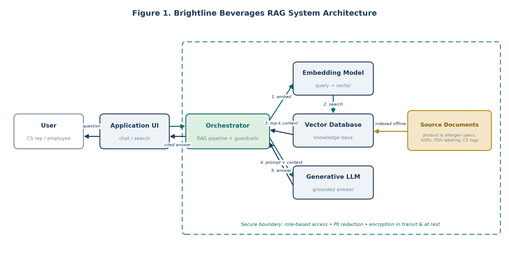
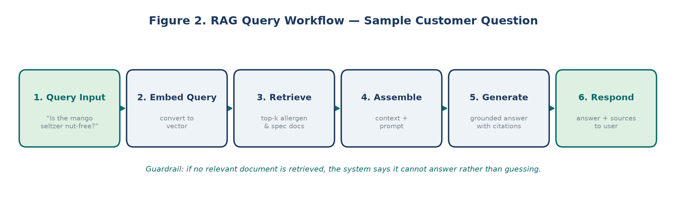

A knowledge assistant for a food & beverage company — Brightline Beverages Co.
Brightline Beverages produces sparkling waters, juices, and ready-to-drink teas, sold through retailers and a customer support line. Its most safety-critical knowledge — allergen and nutrition data, FDA labeling requirements, standard operating procedures, and years of customer-service logs — is scattered across systems and hard to search. Representatives cannot always find accurate allergen answers quickly, and new hires take months to learn where information lives. In this industry a wrong allergen answer is not an inconvenience; it is a safety and compliance risk.
A Retrieval-Augmented Generation (RAG) system grounds a large language model in Brightline's own approved documents. An employee or customer asks a plain-language question; the system retrieves the relevant passages from a trusted knowledge base and the model composes an answer and cites the source. This reduces hallucination and keeps answers current without retraining the model.
Source documents are chunked, embedded into vectors, and indexed offline. At query time an orchestrator embeds the question, retrieves the most similar chunks, assembles them into a prompt, and passes that to the generative model — all inside a secure boundary that enforces role-based access, PII redaction, and encryption.

A sample question — "Is the mango seltzer nut-free?" — is embedded, matched against the allergen and product-spec documents, and answered with citations. A guardrail makes the system abstain when no relevant document is retrieved, rather than guessing on a safety-critical question.

| Decision point | What I chose and why |
|---|---|
| RAG vs. fine-tuning | Chose RAG because the knowledge changes often (recalls, reformulations) and must stay current without retraining. |
| Industry vertical | Chose food & beverage deliberately — allergen and recall accuracy make the cost of a wrong answer concrete and testable. |
| Trust mechanism | Required citations on every answer and a guardrail that abstains when no document supports a response. |
| Validation | Built a working mock RAG system in NotebookLM, uploaded a source, and confirmed grounded, cited answers before finalizing the design. |
Tools: ChatGPT (learning and drafting partner) · NotebookLM / Gemini Notebook (hands-on RAG validation with cited answers) · custom-generated architecture and workflow diagrams · Microsoft Word for the full case study. Each tool played a distinct role — the assistant for learning, NotebookLM for proof, the diagrams for communication.
This work is evidence that I can take a leadership-level problem, design an AI system to solve it, make and defend real trade-off decisions, and connect the technical design to the people who depend on it. The same approach transfers to any organization with scattered, high-stakes knowledge — which is most of them.